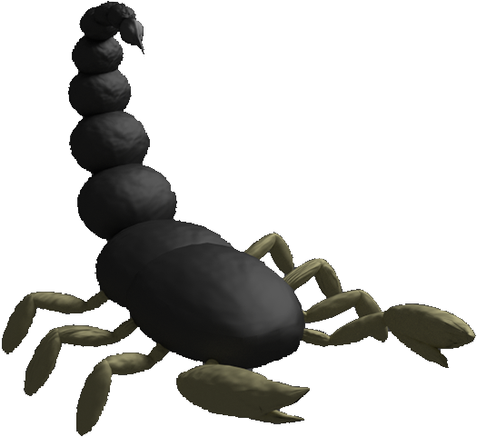

 The goal of the game is to survive and kill the scorpions as quickly as possible. The player is on an expedition in the desert trying to find some ancient artefacts. A sandstorm hits and surprises the expedition team. When the storm has passed, the player finds himself alone in an ancient maze surrounded by scorpions. In order to enable the rest of his team to find him, the player has to light a fire on top of a huge obelisk. The inscription on the obelisk tells the player that the flame will burn once all the scorpions are dead. Killing the scorpions can be done in different ways. Throughout the maze several traps are present. Two kinds of traps exist: